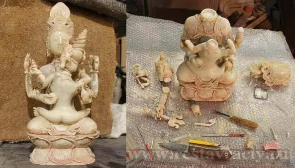
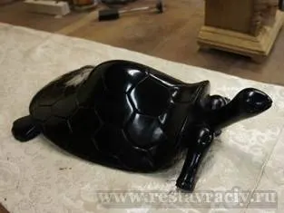
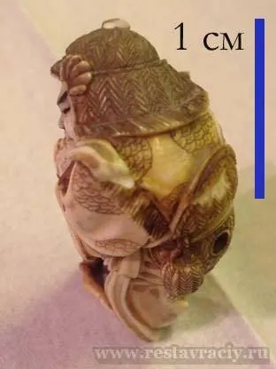

Предметы интерьера
Реставрация фигурок
В мастерской производится реставрация фигурок, статуэток, коллекционных сувениров из дерева, камня, слоновой кости, бивня, фарфора, стекла, металла.


О чём рассказывает мастерская
- Реставрация фигурок из стекла
- Статуэтки из черного дерева
- Фигурки из кости
- Фигурки из рога
- Мебель из рогов
В материале мастерской
Фотографии и детали



Открыть снимок у мастерской


Открыть снимок у мастерской
Посмотреть снимки с сайта мастерской 5
Оригинальные фотографии откроются здесь с сайта мастерской.
 Открыть снимок у мастерской
Открыть снимок у мастерской  Открыть снимок у мастерской
Открыть снимок у мастерской  Открыть снимок у мастерской
Открыть снимок у мастерской  Открыть снимок у мастерской
Открыть снимок у мастерской  Открыть снимок у мастерской
Открыть снимок у мастерской Есть похожая вещь?
Подберите ракурсы для предварительной оценки.